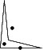

- Authors
- Geert-Jan Giezeman and Wieger Wesselink
Introduction
A polygon is a closed chain of edges. Several algorithms are available for polygons. For some of those algorithms, it is necessary that the polygon is simple. A polygon is simple if edges don't intersect, except consecutive edges, which intersect in their common vertex.
The following algorithms are available:
- find the leftmost, rightmost, topmost and bottommost vertex.
- compute the (signed) area.
- check if a polygon is simple.
- check if a polygon is convex.
- find the orientation (clockwise or counterclockwise)
- check if a point lies inside a polygon.
All those operations take two forward iterators as parameters in order to describe the polygon. These parameters have a point type as value type.
The type Polygon_2 can be used to represent polygons. Polygons are dynamic. Vertices can be modified, inserted and erased. They provide the algorithms described above as member functions. Moreover, they provide ways of iterating over the vertices and edges.
The Polygon_2 class is a wrapper around a container of points, but little more. Especially, computed values are not cached. That is, when the Polygon_2::is_simple() member function is called twice or more, the result is computed each time anew.
Examples
The Polygon Class
The following example creates a polygon and illustrates the usage of some member functions.
File Polygon/Polygon.cpp
#include <CGAL/Exact_predicates_inexact_constructions_kernel.h>
#include <CGAL/Polygon_2.h>
#include <iostream>
typedef K::Point_2 Point;
using std::cout; using std::endl;
int main()
{
Point points[] = { Point(0,0), Point(5.1,0), Point(1,1), Point(0.5,6)};
Polygon_2 pgn(points, points+4);
cout << "The polygon is " <<
(pgn.is_simple() ? "" : "not ") << "simple." << endl;
cout << "The polygon is " <<
(pgn.is_convex() ? "" : "not ") << "convex." << endl;
return 0;
}

Algorithms Operating on Sequences of Points
The following example creates a polygon and illustrates the usage of some global functions that operate on sequences of points.
File Polygon/polygon_algorithms.cpp
#include <CGAL/Exact_predicates_inexact_constructions_kernel.h>
#include <CGAL/Polygon_2_algorithms.h>
#include <iostream>
typedef K::Point_2 Point;
using std::cout; using std::endl;
void check_inside(Point pt, Point *pgn_begin, Point *pgn_end, K traits)
{
cout << "The point " << pt;
cout << " is inside the polygon.\n";
break;
cout << " is on the polygon boundary.\n";
break;
cout << " is outside the polygon.\n";
break;
}
}
int main()
{
Point points[] = { Point(0,0), Point(5.1,0), Point(1,1), Point(0.5,6)};
cout << "The polygon is "
<< "simple." << endl;
check_inside(Point(0.5, 0.5), points, points+4, K());
check_inside(Point(1.5, 2.5), points, points+4, K());
check_inside(Point(2.5, 0), points, points+4, K());
return 0;
}
Polygons in 3D Space
Sometimes it is useful to run a 2D algorithm on 3D data. Polygons may be contours of a 3D object, where the contours are organized in parallel slices, generated by segmentation of image data from a scanner.
In order to avoid an explixit projection on the xy plane, one can use the traits class Projection_traits_xy_3 which is part of the 2D and 3D Linear Geometric Kernel.
File Polygon/projected_polygon.cpp
#include <CGAL/Exact_predicates_inexact_constructions_kernel.h>
#include <CGAL/Projection_traits_yz_3.h>
#include <CGAL/Polygon_2_algorithms.h>
#include <iostream>
typedef K::Point_3 Point_3;
int main()
{
Point_3 points[4] = { Point_3(0,1,1), Point_3(0,2,1), Point_3(0,2,2), Point_3(0,1,2) };
points+4,
if (!b){
std::cerr << "Error polygon is not simple" << std::endl;
return 1;
}
return 0;
}


 1.8.13
1.8.13